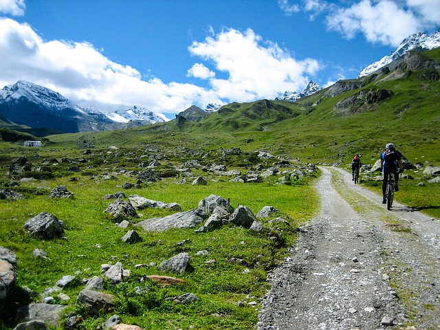
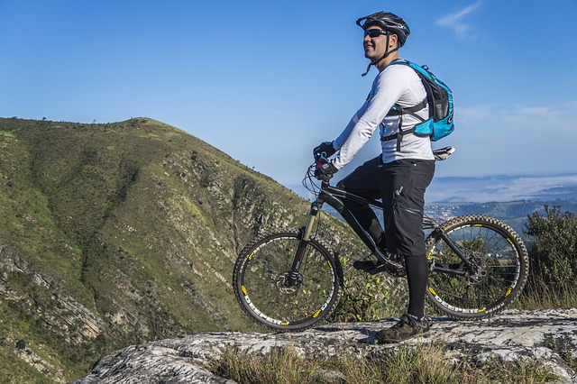

Intro and why it's great to have bicycle!
Cycling, also called bicycling or biking, is the use of bicycles for transport, recreation, exercise or sport. People engaged in cycling are referred to as "cyclists", "bikers", or less commonly, as "bicyclists". Apart from two-wheeled bicycles, "cycling" also includes the riding of unicycles, tricycles, quadracycles, recumbent and similar human-powered vehicles (HPVs).
Bicycles were introduced in the 19th century and now number approximately one billion worldwide. They are the principal means of transportation in many parts of the world. Cycling is widely regarded as a very effective and efficient mode of transportation optimal for short to moderate distances.
Bicycles provide numerous benefits in comparison with motor vehicles, including the sustained physical exercise involved in cycling, easier parking, increased maneuverability, and access to roads, bike paths and rural trails. Cycling also offers a reduced consumption of fossil fuels, less air or noise pollution, and much reduced traffic congestion. These lead to less financial cost to the user as well as to society at large (negligible damage to roads, less road area required). By fitting bicycle racks on the front of buses, transit agencies can significantly increase the areas they can serve.
More info on Wikipedia